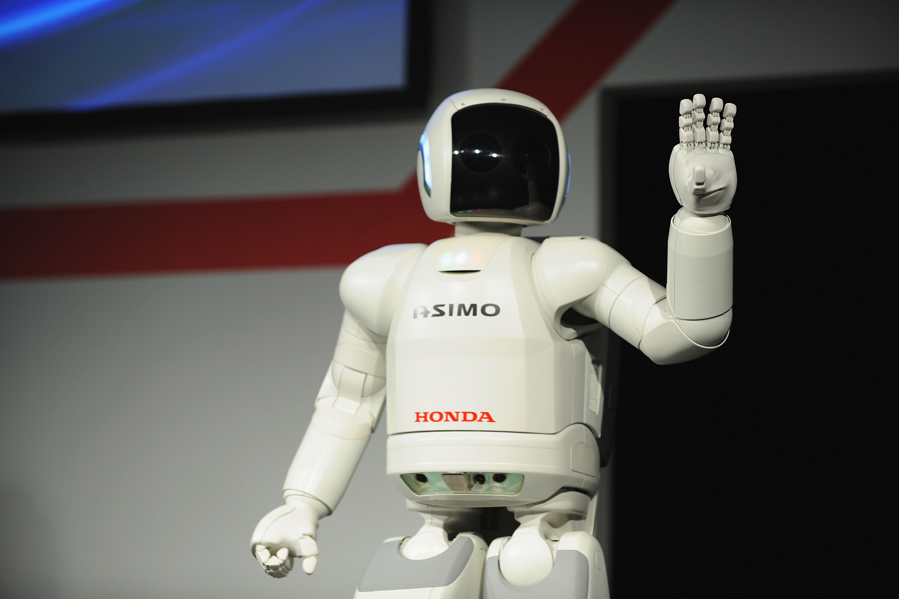
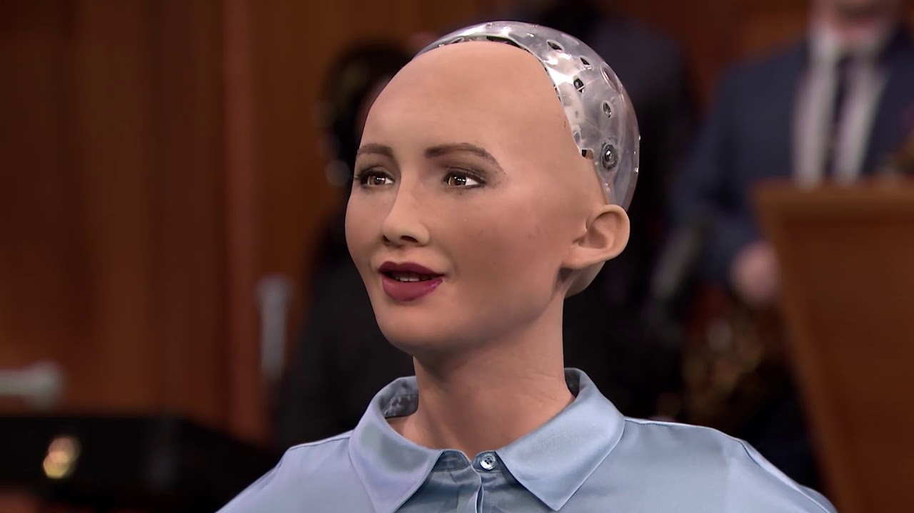

Bonjour, sur ce site, je vais présenter les innovations que j'ai trouvées les plus interressantes sur le thème des robots ressemblant le plus à l'être humain. La question que nous nous posons est : "la machine prendra t-elle un jour la place de l'homme ? (comme dans Matrix)" Pour ma part, je ne pense pas, mais celle-ci pourrait s'avérer utile pour nous.
Top 5 des robots humanoïdes que je préfère :
ASIMO

Le robot ASIMO développé au Japon est le premier robot capable de marcher de façon dynamique en 2000. Il possède une technologie de reconnaissance des objets fondée sur le touché et la vue grâce à des capteurs tactiles lui permettant de manipuler des objets fragiles sans les détruire (ce qui est plutôt pratique).
Sophia

Sophia est une gynoïde sociale (même si elle fait peur) capable de simuler une conversation humaine. Elle est considérée comme étant l'un des robots les plus intelligents au monde et possède même une nationalité (saoudienne) ce qui est une première chez un être artificiel. C'est le robot le plus ressemblant à l'homme que j'ai trouvé.
NAO
NAO est un robot autonome français spécialisé dans l'interaction et utilisé comme plateforme pédagogique. Il mesure environ 60cm, a une autonomie de 1h30 et pèse environ 5kg. Ce petit robot a été mis en vente pour le grand public et peut être acquis pour la modeste somme de 7999€ ; un peu plus cher que Bébo le Robot (disponible jusqu'à 34,74€ en magasin).
Atlas
Le robot Atlas est pour moi le plus impressionnant ; développé par Boston_Dynamics,, il est capable de faire des mouvements que quelques hommes ne peuvent pas réaliser (saut à pieds joints,soulèvement de charges lourdes,salto arrière...). Il mesure entre 175cm et 188cm,pèse 82kg et est conçu pour diverses tâches de recherche et de sauvetage. On m'a fait remarquer qu'une machine comme celle-ci aurait sans doute certains avantages à être utilisée à des fins militaires en vu de sa résistance assez surprenante et de sa grande autonomie.